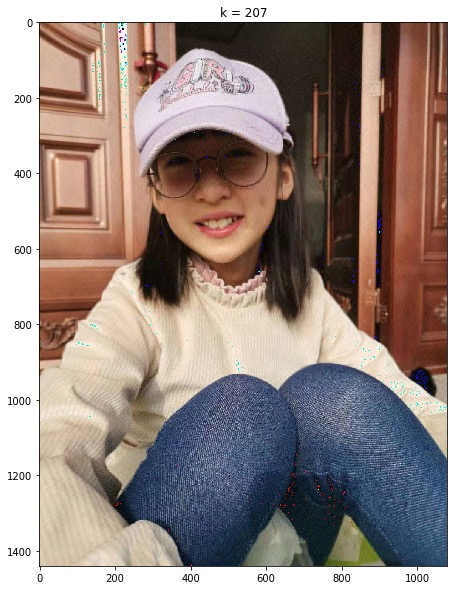

Step1 导入库
import numpy as np
#导入svd()模块
from numpy.linalg import svd
from PIL import Image
import matplotlib.pyplot as plt
Step2 读取图像，一个图像是RGB三个颜色通道的叠加，通过plt.imread()函数得到一个行数╳列数╳3维数组，将图像像素分解成3个矩阵，分别为R、G、B图层，然后对这3个图层进行处理。
# 文件路径
path = r'C:\users\hu\desktop\人工智能数学基础及应用\data\lenna.jpg'
#读取图像
image = Image.open(path)
#生成矩阵
image = np.array(image)
#显示矩阵大小
print(np.shape(image))
#显示原始图像
plt.imshow(image)
Step3 按预先设置的占比求k值，对3个图层分别进行SVD分解、压缩，将压缩后的3个矩阵叠加起来，重构图像。
#阈值，即前k个特征值之和与总的特征值之和的比为80%
t=0.8
#生成与原始图像一样大小的新3维矩阵
image2 = np.zeros_like(image)
#提取R、G、B三个分层图像的矩阵
for i in range(image.shape[2]):
#SVD分解
U, S, V_T = svd(image[:,:,i])
#每层图像分解之后的特征值之和
Total=sum(S)
#前k个特征值之和的初始值设为0，k值的初值设为1
s=0;k=1
#求k值，使前k个特征值之和占总和的80%
for j in range(len(S)-1):
s=s+S[j]
if s<Total*t:
k=k+1
else:
break
#SVD逆运算、重构图像
image2[:,:,i] = U[:,:k].dot(np.diag(S[:k])).dot(V_T[:k,:])
Step4 显示图像
#画布大小
plt.figure(figsize=(20,10))
plt.imshow(image2)
#标题
plt.title('k = %s' % k)
Step5 输出结果
Text(0.5, 1.0, 'k = 207')

